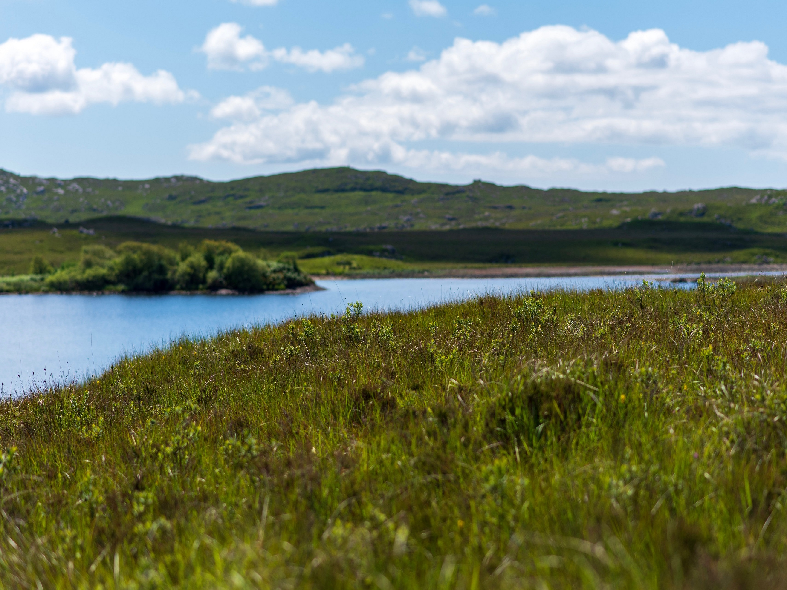

The Boyer Lab
Details are here and there are lots of details to detail.

Presidio Trust
Identifies native and invasive species in the Presidio of San Francisco • Restores and preserves various wetland sites through planting, pruning, and removal of invasive species • Transplants seedlings in the Presidio Nursery

Build Group, Inc.
Estimating Coordinator
Prepared construction proposals for various public and private clients in the Bay Area as part of the Special Projects and Interiors Estimating Team
Santa Barbara Channelkeeper
Collected data onboard vessel in the Santa Barbara Channel, utilized onboard GPS and Google Earth measurement tool to determine GPS coordinates of offshore fishing activity • Conducted weekly surveys from beach in Santa Barbara County and submitted ocean use data in CA Coastal Commission database • Conducted pollution research on coastal environment after 2015 oil spill • Implemented the Marine Protected Area Watch volunteer program in Santa Barbara County